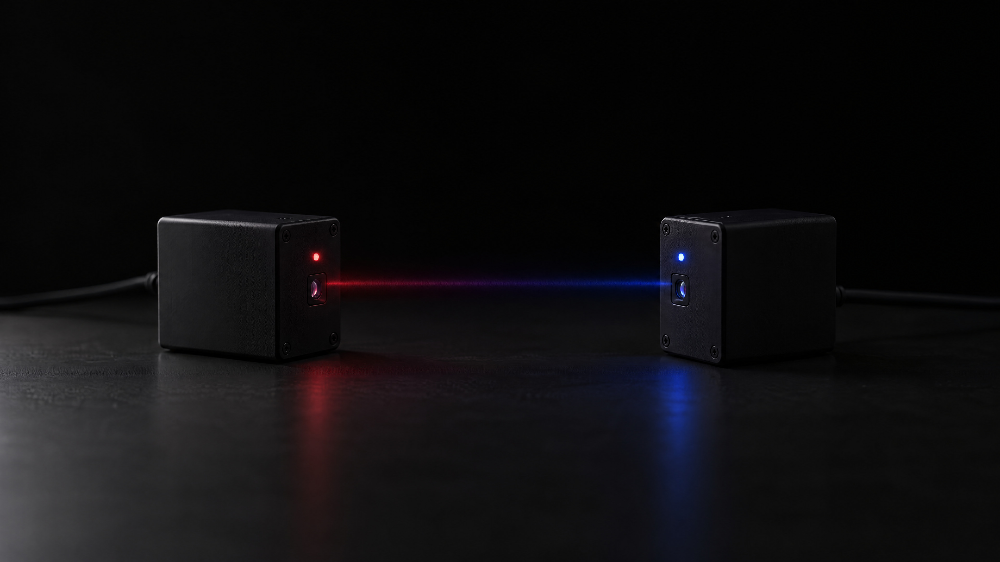

this is your
elephant.
image: ai-generated (gpt-image-2.5-flare)
transfer a file from one laptop
to another, using light.
the same problem, cut
start smaller: the challenges are the stairs
one question, four questions
when nothing arrives
one person per end of the link
a testable piece of the project
and the assistant gets small pieces
you cut the problem, the assistant solves the pieces, and you check each one.